Import a PCB from Gerber files and simulate a section of it
A whole board is usually far more than you need to solve. This guide takes a real four-layer board, the Folio power board, from its Gerber and drill files to the differential S-parameters of its USB pair, solving only an 18.5 by 9.4 mm section around the pair.
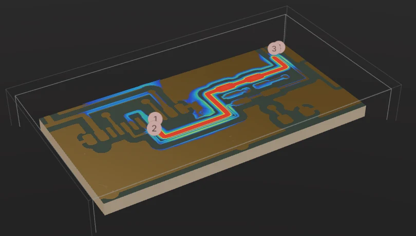
Step by step
Open the workbench in Chrome or Edge 113 or later. You need the board's Gerber files, one per copper layer, its board outline and its Excellon drill file.
-
Set up the stackup
Gerber files hold copper shapes but not the stackup, so set the layers first, from your fab's stackup drawing. Choose New, then Blank board, and add copper with Add layer pair on top. Here I opened a project that holds only the Folio stackup.
- Seven layers, 0.85 mm in all: four copper layers with 0.2 mm of FR-4 prepreg, a 0.45 mm core, then 0.2 mm of prepreg.
- Add layer pair on top adds a dielectric and a copper layer above the top one.
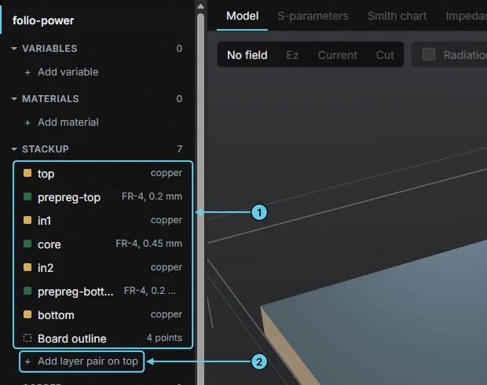
-
Import each Gerber layer
Choose Import once per file. Import each copper layer in turn. The console counts what each file brought in: 2,286 shapes on top, 171 on each inner layer and 255 on the bottom.
- Import, in the toolbar.
- The Gerber file, here the front copper, power-F_Cu.gtl.
- The layer it replaces.
- Keep the file's coordinates, so the layers line up with each other.
- Import. Undo puts the old layer back if you picked the wrong one.
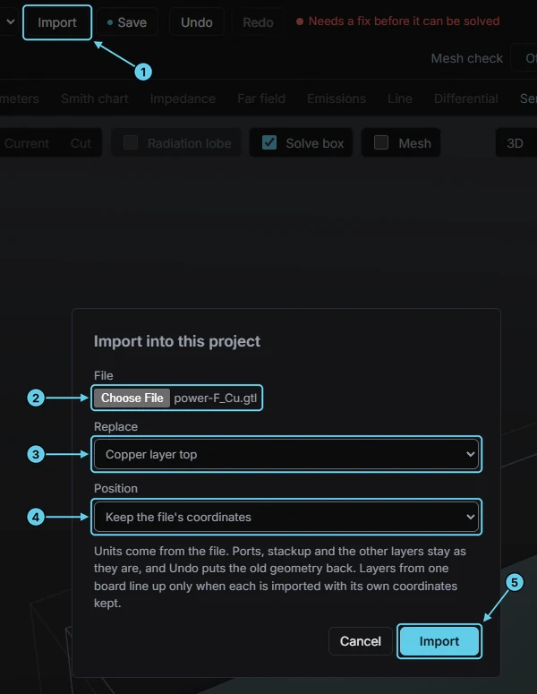
-
Import the drill file
Plated holes become vias between the outer layers. This board's drill file has 170 plated holes, and the 4 slots come in as a via at each end.
- The Excellon drill file, power-PTH.drl.
- Replace: Plated holes (Excellon drill file).
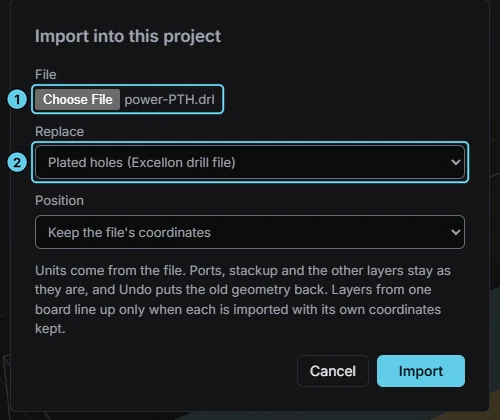
-
Check the whole board
Turn the view with the mouse and look for a layer that landed in the wrong place. A board this size, with its 2,883 copper shapes, would mesh to many times the 8.63 million cells of the section in step 8, which is why the next step cuts it down.
- The console, newest first: one line per imported file.
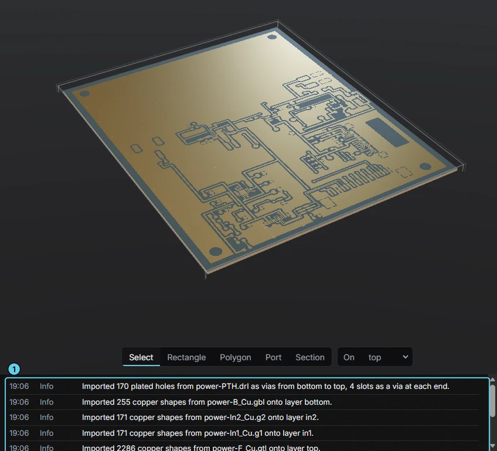
-
Draw the section
Pick the Section tool and drag a rectangle around the part to keep. This one runs from the USB-C connector to the ESD part.
- Section, in the drawing tools. The key is X.
- The rectangle being dragged.
- The hint: copper and the board outline are cut on every layer, and ports, parts and vias outside are removed.
- The pointer's position in mm, so you can start and end on round numbers.
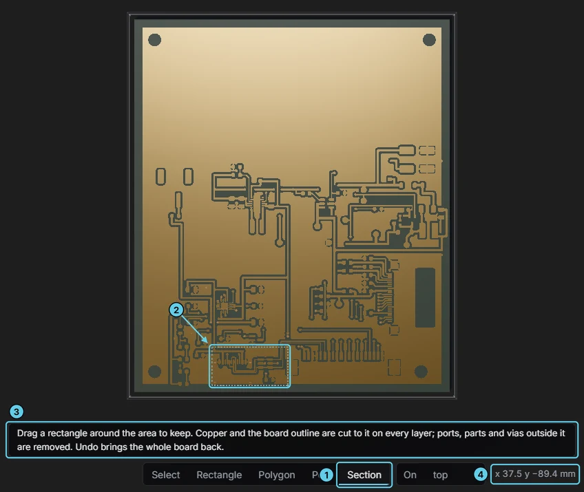
-
Check what was kept
The board is now the section alone, with the connector's pads on the left and the pair running right to the ESD part. Undo brings the whole board back.
- The console: 290 shapes kept whole, 14 cut at the edge and 2,579 dropped, with 160 vias removed.
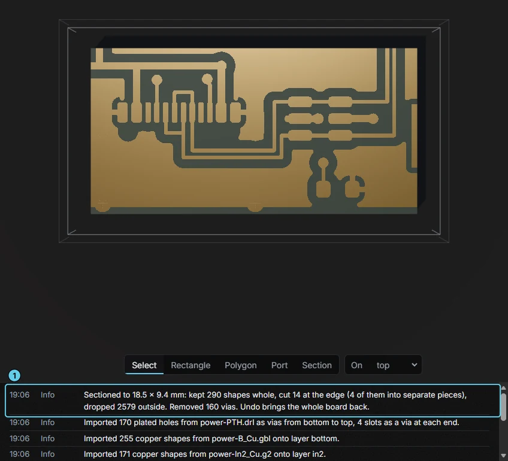
-
Add a port at each end of each line
Choose Port and click on a line's end, then type the exact position and a name. The tool goes back to Select after each port, so press T before the next one. Each port is a source column from the plane below to the trace, as in the drawing under these steps.
- Port, in the drawing tools. The key is T.
- dp_j1 and dm_j1, at the connector.
- dp_esd and dm_esd, at the ESD part.
- The name and the position in mm.
- From layer in1, the inner plane under the pair, to the top copper.
- 50 Ω per port. The pair is read at 90 Ω differential later.
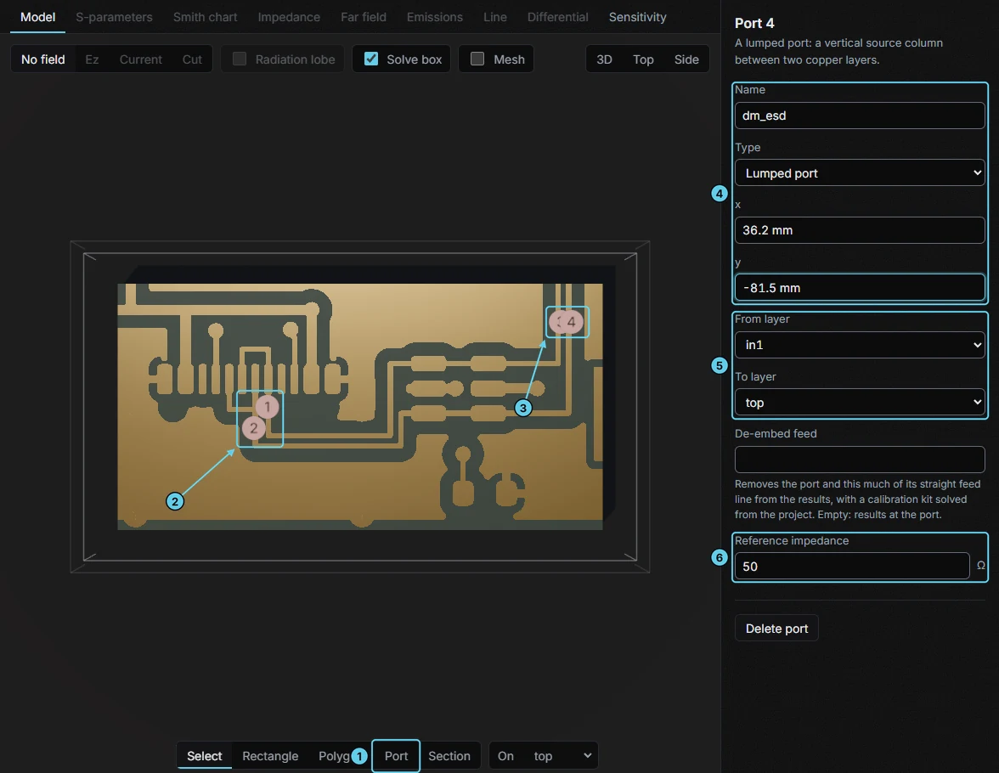
-
Solve
Press Solve. NobuRF drives one port at a time, so four ports take four runs. This section meshed to 8.63 million cells and took 35 minutes on a laptop's GTX 1660 Ti.
- Which run, and its time step.
- How far the field energy has fallen, against the 30 dB that ends a run, and the time so far.
- The mesh size and the number of runs.
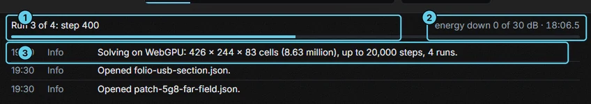
-
Read the pair
Open the Differential tab. It proposes a pairing from which ports transmit to which. Choose Use this pairing, then set the differential reference to your interface's, 90 Ω for USB.
- The Differential tab.
- The pairs: D1 at the connector, D2 at the ESD part.
- Differential reference, 90 Ω.
- Insertion loss, Sdd21: −0.0, −0.1 and −0.5 dB at 0.48, 1 and 2.4 GHz.
- Intra-pair skew: 4.50 ps, with the negative line later.
- The differential TDR from each end.
- The tab says why it gives no impedance here: its 164 ps rise time is longer than the line's 121 ps one-way delay, so the port connections blur into it.
The worst differential return loss, Sdd11, is −5.5 dB. On a line this short, much of that is likely the lumped port connections at each end, which a port's "De-embed feed" setting separates out.
These runs stopped at 30 dB of energy decay. Skew and the TDR lean on the lowest frequencies, so before you sign off on them, set "Stop when energy falls" to 60 dB and solve again.
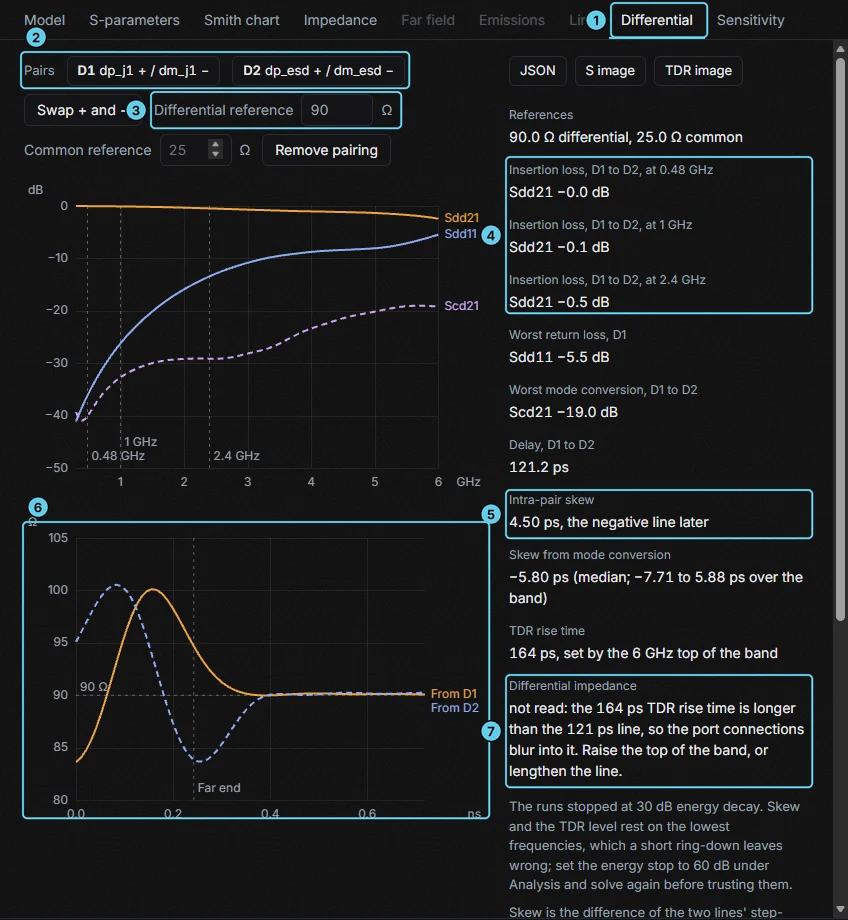
-
Look at the current
Back on the Model tab, the field buttons draw the solved field on the board. Current shows where the drive from the connector flows.
- No field, Ez, Current or a Cut through the board.
- The color scale: 0 dB is the 98th percentile of the current, and the scale reaches 30 dB below it.
- The frequency to show.
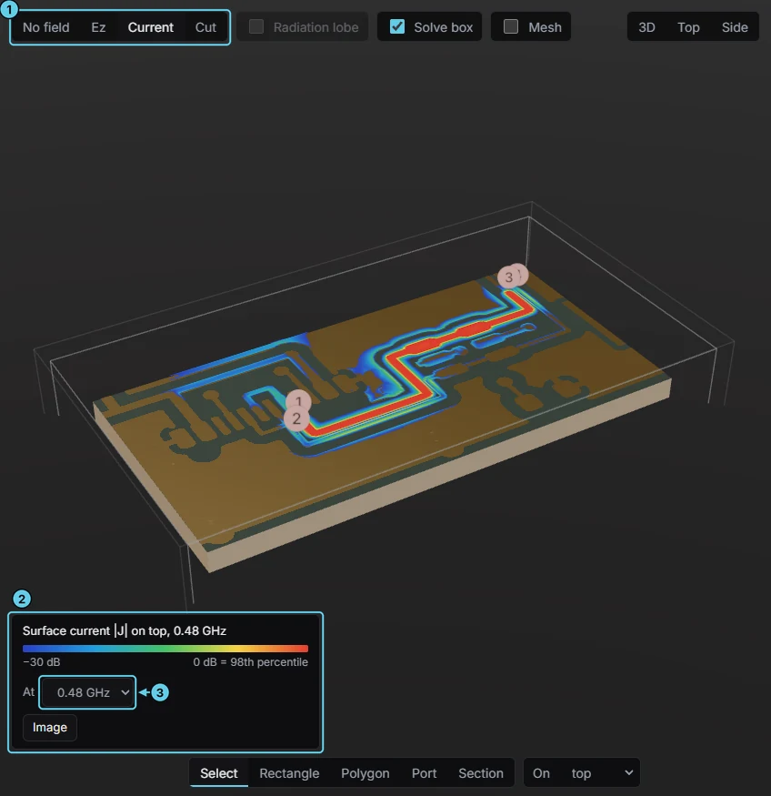


What a port is in this stackup
A lumped port is a short column of source between two copper layers. For a trace on top, its return path is the nearest plane below, here in1, through 0.2 mm of prepreg.
Where to cut
- Cut across the lines where they run straight, a few line widths away from the feature you care about. The new ports sit at the cut, and each port connection shows as a step at the ends of the TDR.
- The cut goes through every layer, so the plane under the section is kept with it.
- Anything that crosses the edge, such as a pour or a long trace, is clipped to it. Parts and vias outside are removed.
- Ask what the section is for. Skew and mode conversion from a local feature survive a tight crop. Impedance and loss need more line: the TDR reads a line only where its delay is longer than the rise time.
Does cropping change the answer?
To check, I solved the diff-pair-detour example in the workbench twice: whole, and cropped to a 10 mm section that keeps its length-matching detour. Each had its own four ports.
| Differential tab | Whole board, 18 mm of line | Section, 10 mm of line |
|---|---|---|
| Intra-pair skew | 10.56 ps | 11.03 ps |
| Delay, D1 to D2 | 122.2 ps | 70.6 ps |
| Worst mode conversion, Scd21 | −10.1 dB | −9.9 dB |
| Worst return loss, Sdd11 | −15.1 dB | −16.9 dB |
| Differential impedance | 93.5 Ω (92.2 to 96.8) | not read, line too short |
The skew comes from the detour, and the section keeps the detour whole, so it reads the skew within 0.5 ps of the whole board. The delay drops with the shorter line, as it should, and the mode conversion, which the detour also causes, stays about the same.